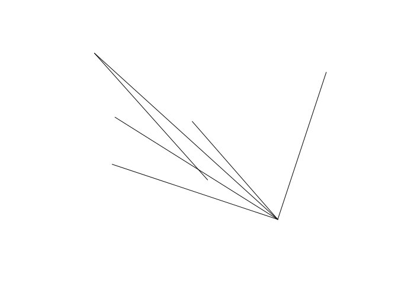

The goal of od is to provide tools and example datasets for working with origin-destination (OD) datasets.
Motivation
The package originated as a set of functions in the package stplanr for working with origin-destination data. The od2line() function, for example, takes a data frame and a spatial object as inputs and outputs geographic lines representing movement between origins and destinations:
library(od) # load example datasets od_data_df # OD data as data frame #> geo_code1 geo_code2 all train bus taxi car_driver car_passenger bicycle foot #> 1 E02002363 E02006875 922 5 356 7 375 76 43 53 #> 2 E02002373 E02006875 1037 111 424 20 155 30 73 214 #> 3 E02002385 E02006875 958 121 334 19 118 25 52 283 #> 4 E02006852 E02002392 437 1 96 3 142 26 61 108 #> 5 E02006852 E02006875 1221 14 509 13 401 50 99 118 #> 6 E02006861 E02006875 1177 43 400 30 123 28 56 492 od_data_centroids[1:2, ] #> geo_code geometry #> 1 E02002407 -1.609934, 53.790790 #> 2 E02002336 -1.62463, 53.88605 desire_lines_stplanr = stplanr::od2line(od_data_df, od_data_centroids) desire_lines_stplanr[1:2, 1:9] #> Simple feature collection with 2 features and 9 fields #> geometry type: LINESTRING #> dimension: XY #> bbox: xmin: -1.581773 ymin: 53.79593 xmax: -1.534957 ymax: 53.82859 #> geographic CRS: WGS 84 #> geo_code1 geo_code2 all train bus taxi car_driver car_passenger bicycle #> 1 E02002363 E02006875 922 5 356 7 375 76 43 #> 2 E02002373 E02006875 1037 111 424 20 155 30 73 #> geometry #> 1 LINESTRING (-1.534957 53.82... #> 2 LINESTRING (-1.581773 53.81...
It works great, and is plenty fast enough for most applications, but there are some issues with stplanr::od2line() (which also affect the other od_*() functions in stplanr):
- The function is a commonly needed and low-level function, buried in a large package, reducing ‘findability’
- To get the function you must install
stplanrplus its numerous dependencies - The function has not been optimised
- It has no class definition of ‘od’ data
The od package, as it currently stands, addresses the first three of these issues (it may at some point define a class for od objects but there are no immediate plans to do so).
The equivalent code in the od package is as follows:
desire_lines_od = od_to_sfc(od_data_df, od_data_centroids)
The result is an sfc object that has the same geometry as the output from od2line:
desire_lines_od[1:2] #> Geometry set for 2 features #> geometry type: LINESTRING #> dimension: XY #> bbox: xmin: -1.581773 ymin: 53.79593 xmax: -1.534957 ymax: 53.82859 #> geographic CRS: WGS 84 #> LINESTRING (-1.534957 53.82859, -1.545708 53.79... #> LINESTRING (-1.581773 53.8186, -1.545708 53.79593) desire_lines_stplanr$geometry[1:2] #> Geometry set for 2 features #> geometry type: LINESTRING #> dimension: XY #> bbox: xmin: -1.581773 ymin: 53.79593 xmax: -1.534957 ymax: 53.82859 #> geographic CRS: WGS 84 #> LINESTRING (-1.534957 53.82859, -1.545708 53.79... #> LINESTRING (-1.581773 53.8186, -1.545708 53.79593)
These are ‘desire lines’ representing the shortest (straight line) path between two centoids and can plotted using geographic data and mapping packages such as sf, mapview, tmap and mapdeck, e.g.:

By default the package uses the sfheaders package to create sf objects. You can can also specify sf outputs as follows:
desire_lines_od_sf1 = od_to_sf(od_data_df, od_data_centroids)
Performance
The package is designed to be fast, with centroids only created when needed and the use of sfheaders.
Benchmark on a small dataset:
nrow(od_data_df) #> [1] 6 bench::mark(check = FALSE, max_iterations = 100, stplanr = stplanr::od2line(od_data_df, od_data_zones), od = od_to_sfc(od_data_df, od_data_zones), od_sf1 = od_to_sf(od_data_df, od_data_zones), od_sf2 = od_to_sf(od_data_df, od_data_zones, package = "sf", crs = 4326) ) #> # A tibble: 4 x 6 #> expression min median `itr/sec` mem_alloc `gc/sec` #> <bch:expr> <bch:tm> <bch:tm> <dbl> <bch:byt> <dbl> #> 1 stplanr 4.64ms 5ms 196. 596.5KB 11.4 #> 2 od 2.32ms 2.46ms 386. 78.2KB 11.9 #> 3 od_sf1 2.61ms 2.8ms 339. 74KB 10.5 #> 4 od_sf2 2.6ms 2.73ms 344. 87KB 14.3